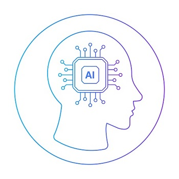

Independente da fase de maturidade de um Dev (júnor, pleno ou sênior), podemos desencadear um estado de espírito maior chamado Dev Cansado. Esse podcast é seu!
Inteligência Artificial
O que é Inteligência Artificial?
IA tornou-se um termo genérico para aplicações que executam tarefas complexas que antes exigiam interação humana, como se comunicar com clientes online ou jogar xadrez. O termo é frequentemente usado de forma intercambiável com seus subcampos, que incluem machine learning (ML) e deep learning.
No entanto, existem diferenças. Por exemplo, o machine learning é centrado na criação de sistemas que aprendam ou melhorem seu desempenho com base nos dados que eles consomem. É importante notar que, embora todo machine learning seja IA, nem toda IA é machine learning.
Para obter o valor total da IA, muitas empresas estão fazendo investimentos significativos em equipes de ciência de dados. A ciência de dados combina estatísticas, ciência da computação e conhecimento de negócios para extrair valor de várias fontes de dados.
Quais são os benefícios da inteligência artificial?
A inteligência artificial tem o potencial de oferecer uma série de benefícios para vários setores.
- Resolução de problemas complexos
- Aumento da eficiência empresarial
- Tomada de decisões mais inteligentes
- Automação de processos de negócios
A tecnologia de IA pode usar redes de aprendizado profundo e ML para resolver problemas complexos com inteligência semelhante à humana. A IA pode processar informações em escala, encontrando padrões, identificando informações e fornecendo respostas. Você pode usar a IA para resolver problemas em vários campos, como detecção de fraudes, diagnóstico médico e análise de negócios.
Ao contrário dos humanos, a tecnologia de IA pode funcionar 24 horas por dia, 7 dias por semana, sem diminuir as taxas de desempenho. Em outras palavras, a IA pode realizar tarefas manuais sem erros. É possível permitir que a IA se concentre em tarefas repetitivas e tediosas, para que você possa usar recursos humanos em outras áreas de uma empresa. A IA pode diminuir as workloads dos funcionários e, ao mesmo tempo, simplificar todas as tarefas relacionadas aos negócios.
A IA pode usar o ML para analisar grandes volumes de dados com mais rapidez do que qualquer ser humano faria em comparação. As plataformas de IA podem identificar tendências, analisar dados e fornecer orientação. Com a previsão de dados, a IA pode ajudar a sugerir o melhor curso de ação futura.
Você pode treinar a IA com ML para realizar tarefas com precisão e rapidez. Isso pode aumentar a eficiência operacional ao automatizar partes da empresa que os funcionários enfrentam dificuldades ou consideram tediosas. Da mesma forma, você pode usar a automação de IA para liberar recursos dos funcionários para trabalhos mais complexos e criativos.
Quais são os tipos de IA?
Conforme o conceito de inteligência artificial ganhava popularidade, novos pesquisadores se dedicaram ao tema, dando origem a diferentes abordagens
- IA Forte: Imita o raciocínio humano de forma tão precisa que pode resolver situações mais rapidamente e assertivamente que um humano.
- IA Fraca: Não possui a mesma capacidade de imitar o raciocínio humano e não pode raciocinar de forma autônoma.
Quais são as principais tecnologias de inteligência artificial?

As redes neurais de aprendizado profundo formam o núcleo das tecnologias de inteligência artificial. Elas refletem o processamento que acontece no cérebro humano. O cérebro contém milhões de neurônios que trabalham juntos para processar e analisar informações. As redes neurais de aprendizado profundo usam neurônios artificiais que processam informações em conjunto. Cada neurônio artificial, ou nó, usa cálculos matemáticos para processar informações e resolver problemas complexos. Essa abordagem de aprendizado profundo pode resolver problemas ou automatizar tarefas que normalmente exigem inteligência humana.
Você pode desenvolver diferentes tecnologias de IA treinando as redes neurais de aprendizado profundo de maneiras diferentes. A seguir, apresentaremos algumas das principais tecnologias baseadas em redes neurais.
- Processamento de linguagem natural
- Visão por computação
- IA generativa
- Reconhecimento de voz
O PLN usa algoritmos de aprendizado profundo para interpretar, entender e coletar significados a partir de dados de texto. O PLN pode processar textos criados por humanos, o que a torna útil para resumir documentos, automatizar chatbots e realizar análise de sentimento.
A visão computacional usa técnicas de aprendizado profundo para extrair informações e insights de vídeos e imagens. Usando a visão computacional, um computador pode entender imagens da mesma forma que um humano faria. É possível usar a visão computacional para monitorar o conteúdo on-line em busca de imagens inapropriadas, reconhecer rostos e classificar detalhes de imagens. Em carros e caminhões autônomos, é fundamental monitorar o meio ambiente e tomar decisões em frações de segundo.
A IA generativa se refere a sistemas de inteligência artificial que podem criar novos conteúdos e artefatos, como imagens, vídeos, texto e áudio, a partir de instruções de texto simples. Ao contrário da IA anterior, limitada à análise de dados, a IA generativa aproveita o aprendizado profundo e conjuntos de dados massivos para produzir resultados criativos de alta qualidade, semelhantes aos dos humanos. Embora possibilite aplicações criativas interessantes, existem preocupações com preconceitos, conteúdo prejudicial e propriedade intelectual. No geral, a IA generativa representa uma grande evolução nos recursos de IA para gerar novos conteúdos e artefatos de maneira semelhante à humana.
O software de reconhecimento de fala usa modelos de aprendizado profundo para interpretar a fala humana, identificar palavras e detectar o significado. As redes neurais podem transcrever falas para texto e indicar o sentimento vocal. Você pode usar o reconhecimento de fala em tecnologias como assistentes virtuais e software de call center para identificar o significado e realizar tarefas relacionadas.
Quais são os desafios da implementação da IA?

A IA tem vários desafios que tornam a implementação mais difícil. Os obstáculos a seguir são alguns dos desafios mais comuns com a implementação e o uso da IA.
- Governança de dados
- Dificuldades técnicas
- Limitações de dados
As políticas de governança de dados devem obedecer às restrições regulatórias e às leis de privacidade. Para implementar a IA, você deve gerenciar a qualidade, a privacidade e a segurança dos dados. Você é responsável pela proteção dos dados e da privacidade do cliente. Para gerenciar a segurança dos dados, sua organização deve ter uma compreensão clara de como os modelos de IA usam e interagem com os dados do cliente em cada camada.
Treinar a IA com machine learning consome muitos recursos. Um alto limite de poder de processamento é essencial para que as tecnologias de aprendizado profundo funcionem. Você deve ter uma infraestrutura computacional robusta para executar aplicações de IA e treinar seus modelos. O poder de processamento pode ser caro e limitar a escalabilidade de seus sistemas de IA.
Para treinar sistemas de IA imparciais, você precisa inserir grandes volumes de dados. Você deve ter capacidade de armazenamento suficiente para lidar e processar os dados de treinamento. Da mesma forma, você deve ter processos eficazes de gerenciamento e qualidade de dados para garantir a precisão dos dados que você usa para treinamento.